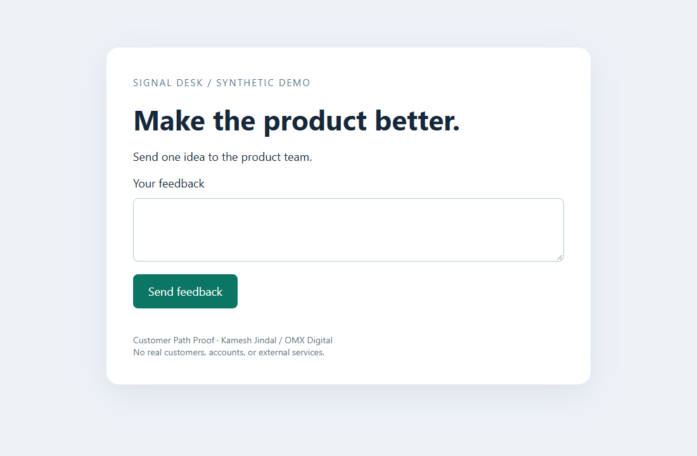
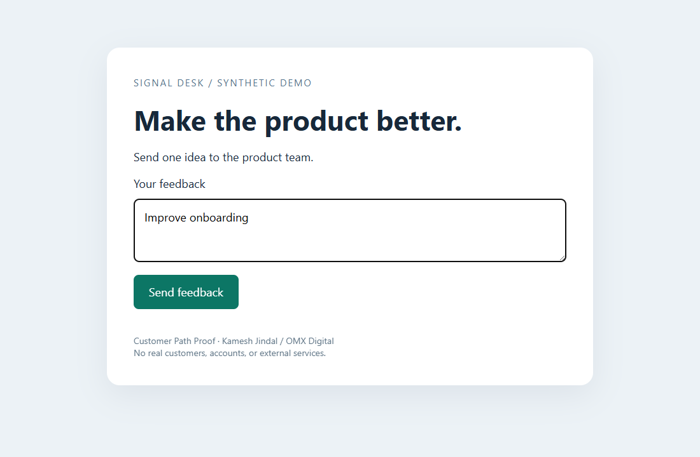
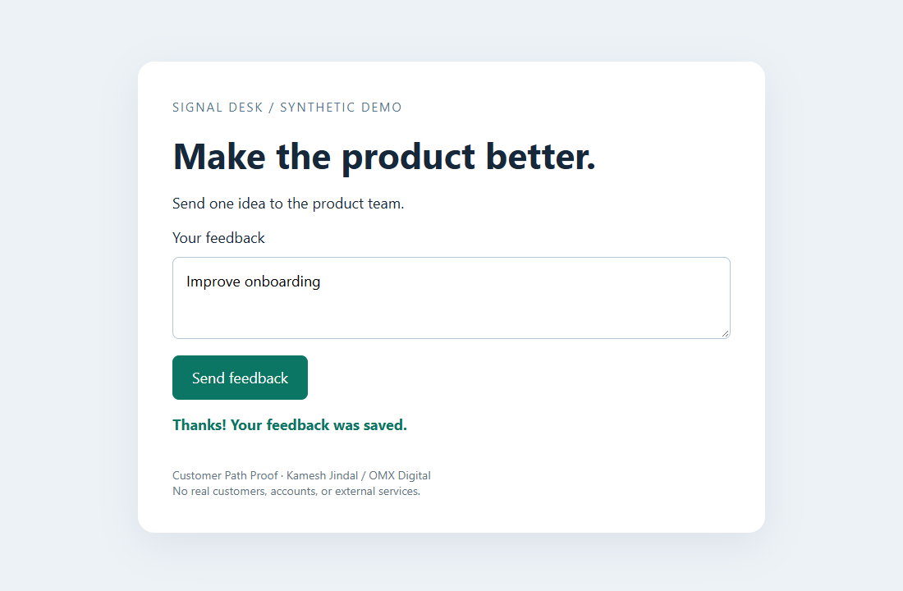

Feedback must be saved, not merely acknowledged
First divergence: none



{"httpStatus":200,"field":"items","expected":["Improve onboarding"],"observed":["Improve onboarding"]}
[]
Only the declared journey was checked. Passing does not establish overall application correctness. Screenshots can contain sensitive data.